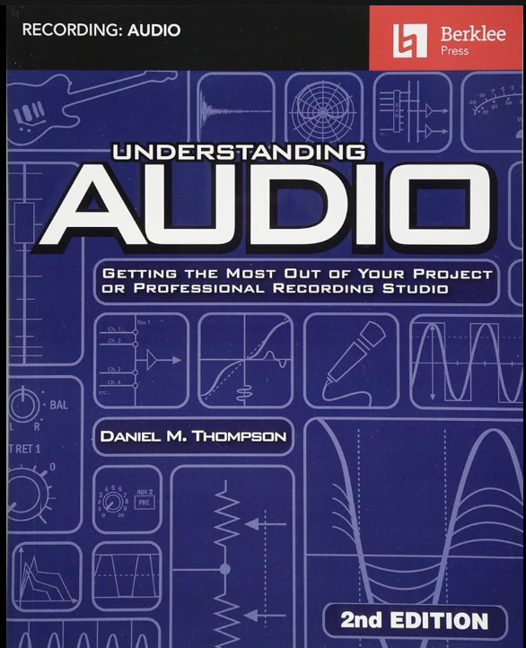
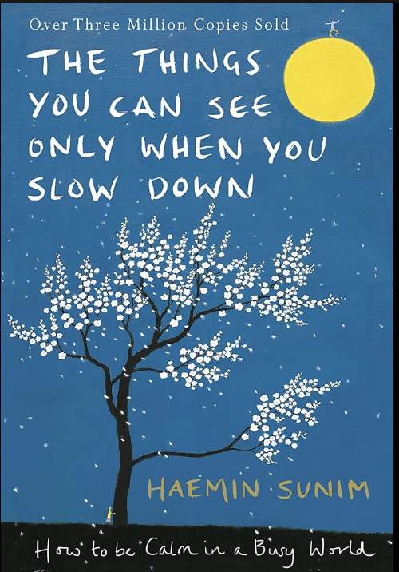
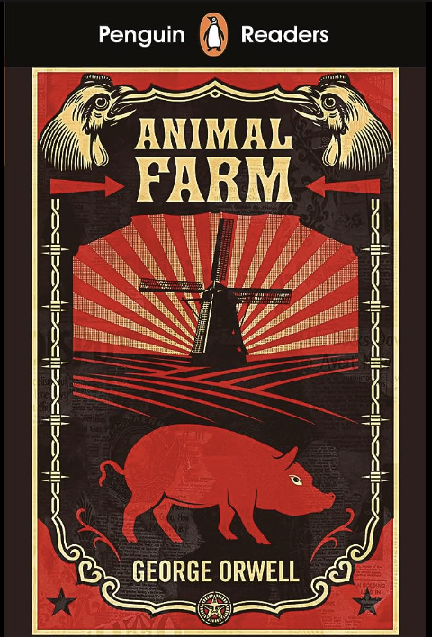
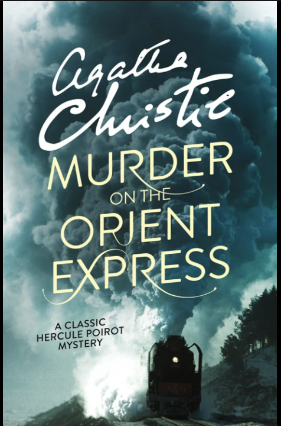

I wanted to take this class because I have at my previous school started learning to do some HTML, CSS, and minimal Javascript coding, but the class didn't really go in much depth and I wanted to learn more and get more experience doing these things. I have beginner/moderate experience with C++, python, HTML, CSS, and Javascript.
My favorite restaurant is Dali in Somerville because it has many small dishes that you can share so you can eat a lot of different things. The quality of their food is also really good.
My Favorite Restaurant
I like to eat boeuf bourguignon with mashed potatoes
and green beans on
the side. The reason I like this dish
is because the meat when the dish is
made right melts
immediately when you chew it. It is a very good winter meal
| NAME | IMAGE | AUTHOR | SUMMARY |
|---|---|---|---|
| Understanding Audio |  | Daniel M. Thompson | This book covers most common technical details of audio from recording to mixing, to how microphones and monitors are built. |
| The Things You Can See Only When You Slow Down |  | Haemin Sunim | This book is a collection of short messages/stories that help change your mindset when things out of your control happen. |
| Animal Farm |  | George Orwell | This book is about a group of farm animal that stand up against their owner hoping to create a more equal society. |
| Murder on The Orient Express |  | Agatha Christie | A train with passengers has stopped in the middle of a snowstorm but one passanger has been murdered. A detective on board tries to figure out who murdered the victim. |